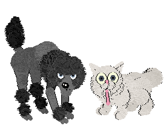
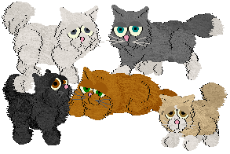
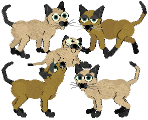
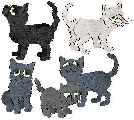
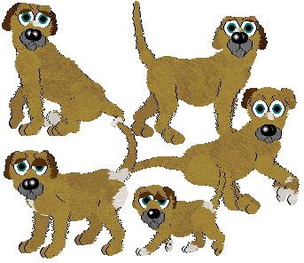
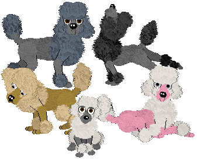
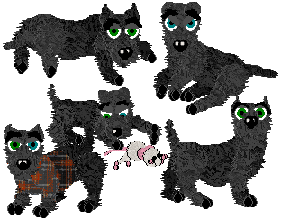
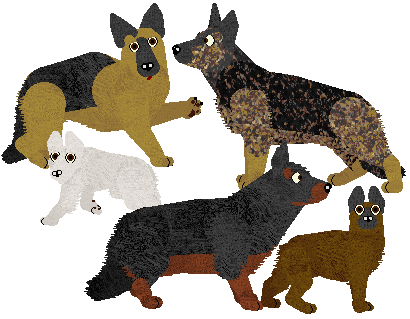
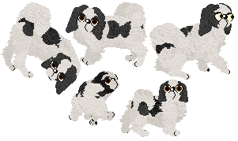
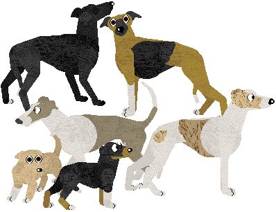

VPZ Research Center
| homeCatz << >> Dogz
You are entering a zone where the catz are loyal obedient droolers and the dogz are independent, preening, and full of attitude. My newest hobby is trying to created replicas of catz for dogz and vice versa. It is a challenging endeavor, but it can be fun. Cat and Dog breedz cannot be "converted" directly. Their proportions are very different and some features are not included in both types and must be added in (like eyebrows and whiskers). It is a challenge that I enjoy.
The appearence is my sole creation, but the sounds and naming are possible only because of Carolyn (thanks for helping me and teaching me!). For anyone who doesn't know her, she is the single greatest hexer that has ever been, and always a very patient and helpful person. I have gotten more than my share of help from her, especially concerning sounds, which I have found overwhelming and frusterating. So, I have to give her about a million thank you's and apollogize for bugging her so much.
If you have only Dogz or only Catz, this is not the real solution to having the other in your game. They act much differently. While these breedz are fun, if you want the true dogz or catz experience or to get all kinds of fun breedfiles for "the other" game, you should try Carolyn's catz behaviors or dogz behaviors pakages.
-------------------------------
~All these breedz are proudly made from the original PFM breedz! "From scratch." ;-) Please respect my hard work and give credit where credit is due
~Do not directly link to my files, and if you distribute them, please give me credit.
-------------------------------
.cat files need to go in Resource\Catz folder.
.dog files need to go in Resource\Catz folder.
~The files are zipped, so you need an unzipping program such as WinZip to use them. You do not need any other breedz files or anything to use these. Sound files are available when possible. If sounds aren't available, they may be eventually, but the breed is currently silent (not cat/dog sounds). Some of the feline/canine breedz have internal sounds; others are soundstripped to keepthe files small (you can download the external sounds from Carolyn's Creations.)
~Breedz won't show up in the AC? The most common problem is that the Bunny.cat and/or Pig.dog breed file was changed or deleted. You need to either reinstall your game or download the Bunny (and/or Pig) from http://www.dmwright.com/petz/
~If you have trouble downloading, right-click the link and choose "Save Target As..." All the files should work. (Although I can't verify Petz 3 or 4 downloads, since I don't use those games.) Sometimes files are interrupted in download, and you get corrupted messages, especially for large files and especially if you use dial-up. TRY AGAIN LATER.
| Catz for Dogz |
|
PersianDog  Credit for sounds, default naming "Homebody", and international conversion goes to Carolyn. Thanks to Minibyte for fixing the Petz 3 (English) conversion. Variations are of my own creation, not from game origins. *** Download *** (Uses 'Persian' sounds from Carolyn's Creations.) |
|
SiameseDog  Variations are taken directly from the Catz counterpart. *** Download *** (silent) |
|
RBlueDog  Variations are of my own creation (based on the real life Russian Shorthair) *** Download *** (silent) |
| Dogz for Catz |
|
MuttCat  Variations are taken directly from the Dogz counterpart. *** Download *** (silent) |
|
PoodleCat  Variations are of my own creation, not from game origins. *** Download *** (silent) |
|
ScottieCat  Variations are taken directly from the Dogz counterpart. *** Download *** (silent) |
|
Originals (Not based on original PFM style) Posing your Cani-catz: The way to get a "professional" stack, take your "dog" to the clothes closet, align him to the side (left-facing looks best), put a shirt on, and take it off. When you remove the shirt, hold your hand in front of the dog's face and take a picture if he goes into a stack. If he doesn't, put the shirt on and try again. |
|
GSD (cat)  *** Download *** (Uses "102" sounds from Carolyn's Creations |
|
Japanese Chin (cat)  (My first ever breed with mutatable spots!) *** Download *** (Uses "102" sounds from Carolyn's Creations |
|
Whippet (Cat)  (Cross up tails with drop tails at own risk!) *** Download *** (Uses "102" sounds from Carolyn's Creations |